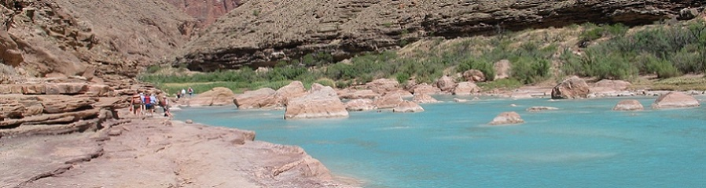
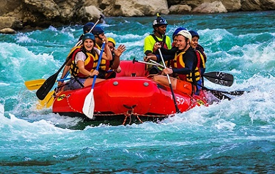
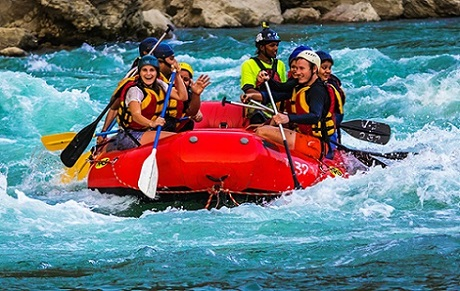

Whitewater rafting is an outdoor recreational activity that involves navigating through river rapids using an inflatable raft. Whitewater rafting can be enjoyed by people of various skill levels, from beginners to experienced rafters

White Water Rafting

History
Whitewater rafting has an interesting history that reflects both the evolution of outdoor recreation and the development of rafting technology
Adventure Awaits You

 
